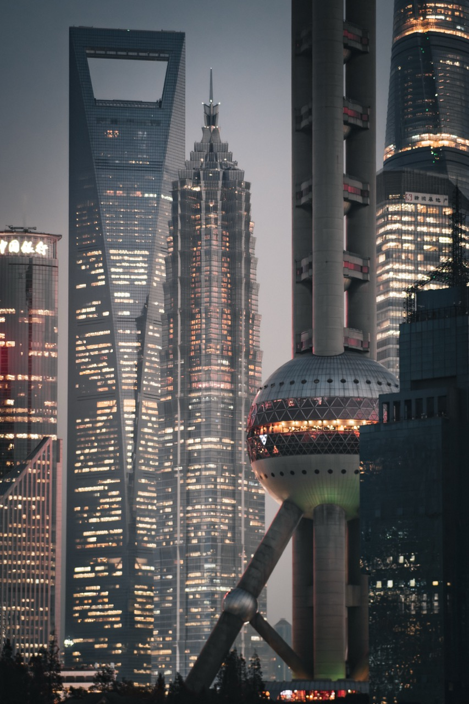
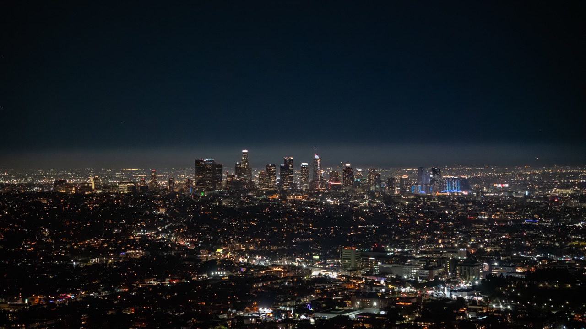
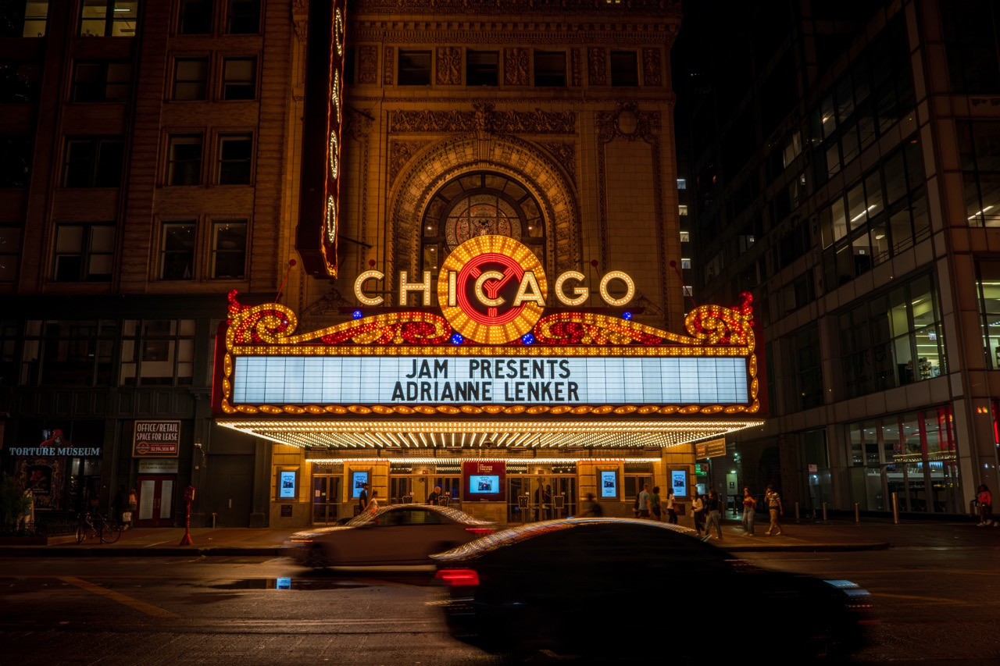
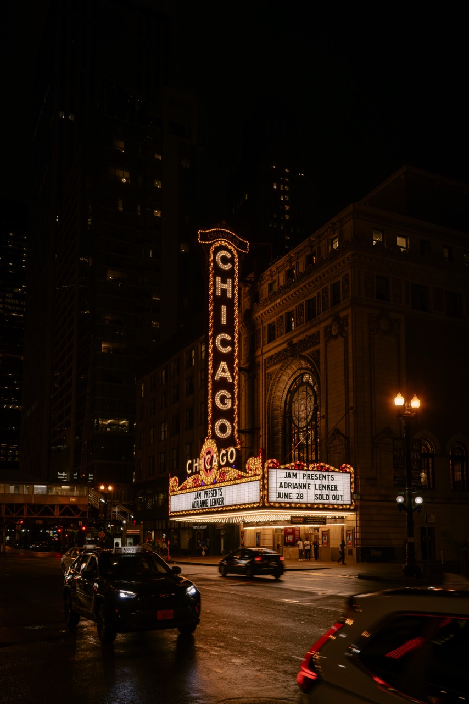
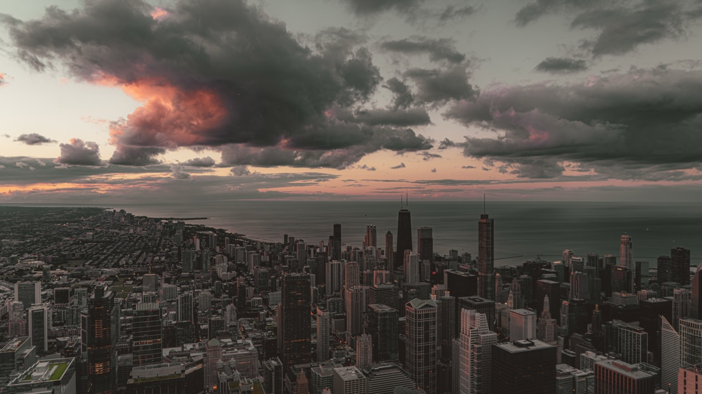
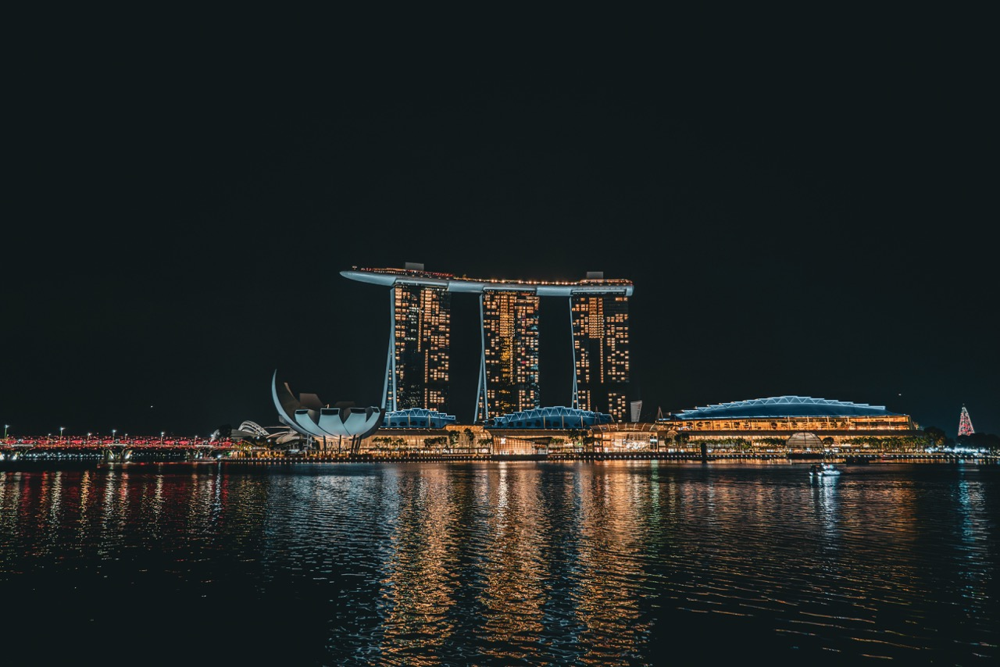
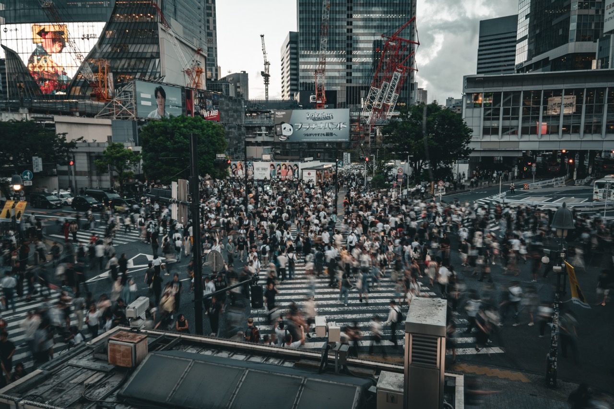
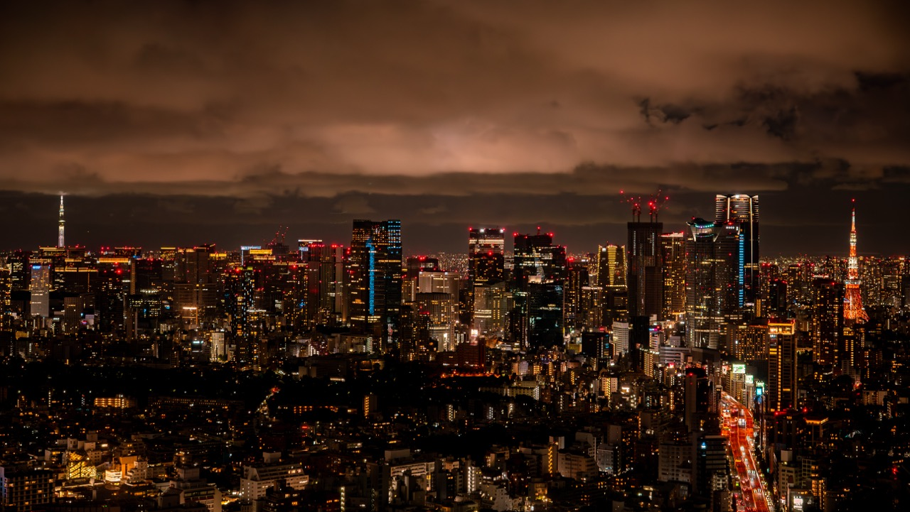
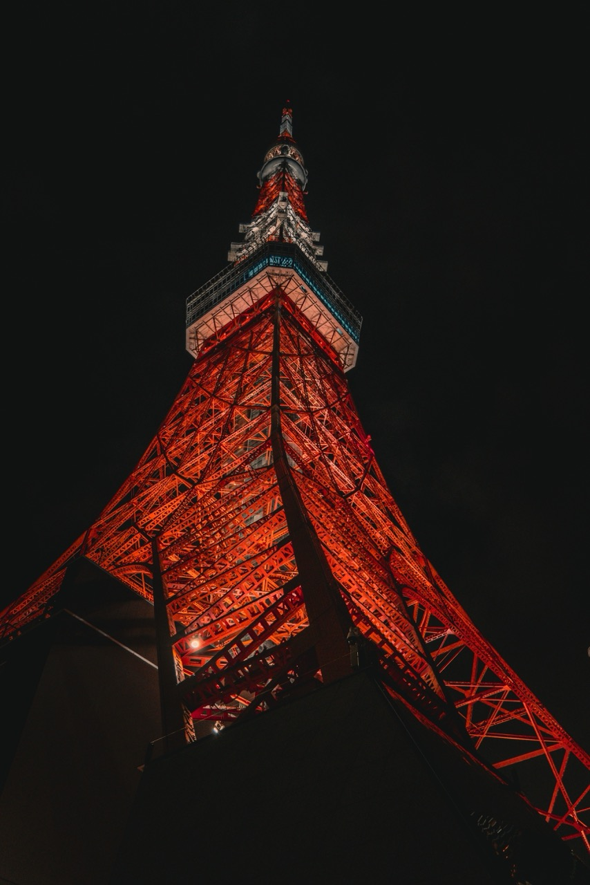

A few pictures for my CS project.

Singapore — Parkroyal on Pickering.

Tokyo — Yakult tower.
Shanghai — skyline perspective.
San Francisco — evening glass and sky.
Los Angeles — downtown reflections.
Chicago — riverfront geometry.
Chicago — city scene 2.
Chicago — city scene 3.
Singapore — downtown view.
Tokyo — city scene 2.
Tokyo — city scene 3.
Tokyo — city scene 4.